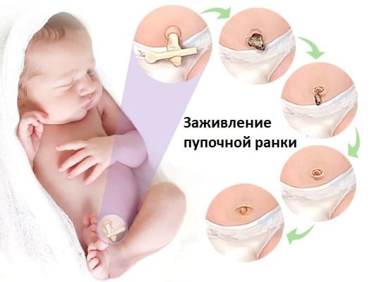

Именно пупочная ранка принципиально отличает новорожденного от детей постарше. Из-за риска инфицирования до ее заживления нежелательна общая ванна, вообще нежелательно, чтобы в незаживший пупок попадала вода.При выписке из роддома в обычные сроки (пятый – седьмой день) пупочная ранка полностью зажить не успевает. Традиционно принято обрабатывать пупок раствором бриллиантового зеленого (зеленкой). И делать это надо ежедневно до тех пор, пока ранка не станет полностью сухой. Никогда не ковыряйтесь в детском пупке спичкой, обмотанной ватой. Возьмите пипетку и капните в пупок 1–2 капли зеленки, после чего подождите, пока высохнет. Если имеются небольшие кровянистые выделения, приложите на пару минут ватный тампон, смоченный перекисью водорода (перед тем, как капать зеленку).

Пупок новорожденного может стать причиной некоторых болезней, которые, к счастью, довольно редки. Тем не менее родители должны знать ситуации, при которых только врач способен к принятию адекватных решений: кровотечение или выделение гноя из пупочной ранки, краснота кожи вокруг пупка, пупок, мокнущий более трех недель после рождения. У очень многих детей первого года жизни имеется пупочная грыжа (выпячивание в области пупка, появляющееся, чаще всего, при крике). В подавляющем большинстве случаев она не представляет никакой опасности, не требует никакого лечения и проходит сама по мере роста ребенка и укрепления мышц брюшного пресса.
Е.О.Комаровский. "Здоровье ребенка"